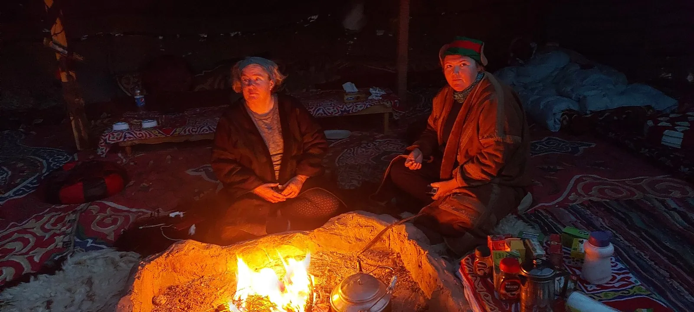
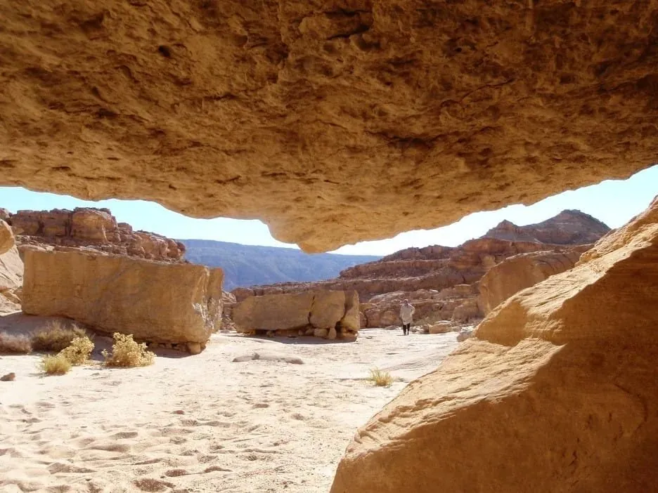
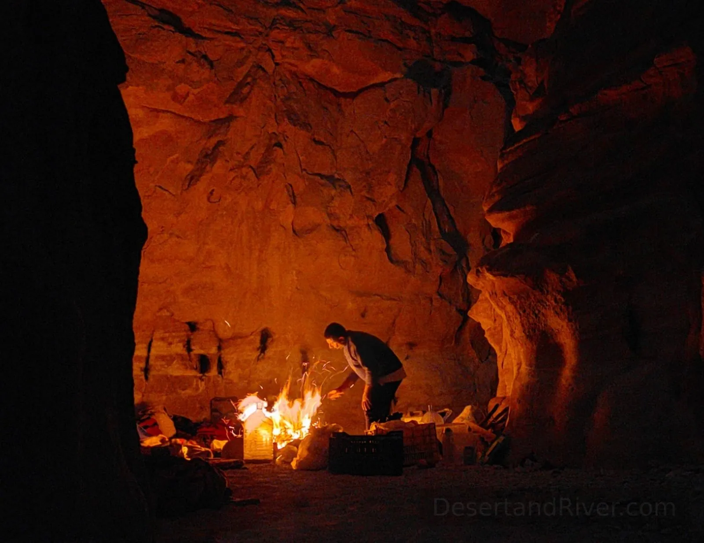
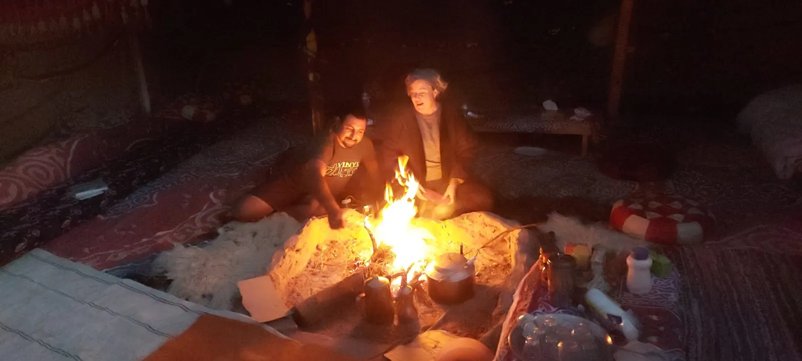
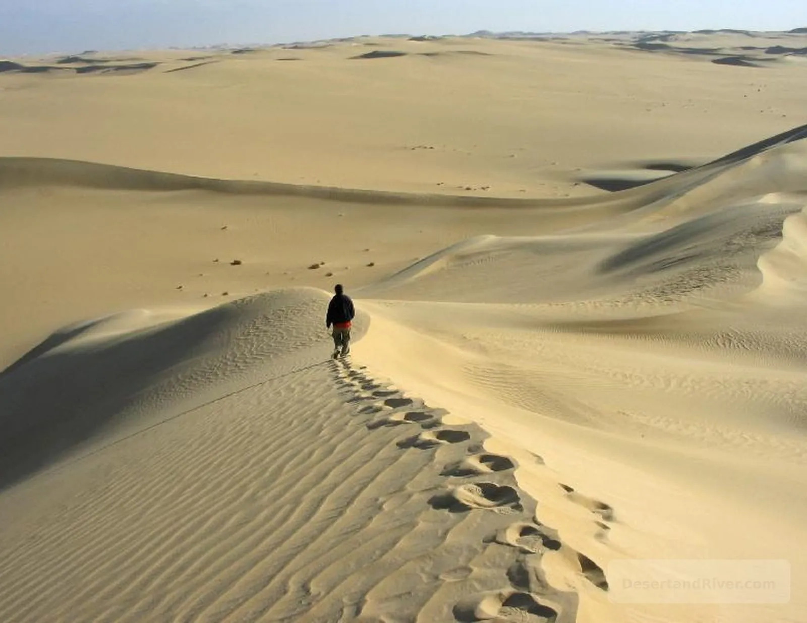

Desert & River
Reis dieper de Sinaï in met reizen op maat, culturele verdieping en echte lokale verbinding.
Een dagtocht laat je de woestijn zien. Een nacht erin laat je iets heel anders zien: de stilte als het vuur laag brandt, en een hemel zo donker dat je voor de Melkweg geen telescoop nodig hebt. Deze tweedaagse kampeertocht vanuit Dahab volgt dezelfde route als onze dagtocht naar Arada, maar zonder haast: meer tijd bij elke stop, langer in de canyon en een nacht in de woestijn middenin. Joseph en Annet leiden de tocht samen, met meer dan 30 jaar gidservaring in de Sinaï en samen bijna 20 jaar in Dahab.

Om 8.00 uur vertrekt de jeepsafari uit Dahab over de binnenlandse weg richting Wadi Arada. Dezelfde start als onze dagtocht, maar met een hele extra dag voor de boeg hoeft niets gehaast. We nemen de tijd bij de oude rotsinscripties en wandelen en klimmen dan door de Double Canyon, langs versteend koraalrif. Een uitgebreide lunch in de woestijn, een bezoek aan de Nawamis-graven en een makkelijke wandeling door de Hamata Canyon terwijl het licht zachter wordt, brengen ons naar het kamp voor het diner rond het vuur.


Beschut tussen de kronkelende wanden van de Zigzag Canyon: een diner bij kaarslicht in de stilte, vuurlicht op het zandsteen en een nacht omringd door rots. Gemaakt voor twee.

Slapen in de open woestijn bij de Dragonhead Mountain, ver van elke lichtvervuiling. Op een heldere nacht zonder maan strekt de Melkweg zich van horizon tot horizon uit. Plan rond nieuwe maan voor de donkerste hemel.
Een dagtocht laat je de woestijn zien. Een nacht erin laat je iets heel anders zien.
Een ontspannen ochtend in het kamp, daarna naar de Dragonhead Mountain (Gebel Makhroum) voor het uitzicht over het zandsteenlandschap en de duinen eronder. De grote finale is het zandduin Hedoda: sandboarden, het meer dan eens beklimmen of gewoon kijken hoe het licht over de woestijn beweegt, voordat we terugrijden naar Dahab.

Niet inbegrepen: fooien en persoonlijke uitgaven.
€600 per auto, privé, alles inbegrepen
Het volledige programma van dag twee bestaat ook als dagtocht vanuit Dahab. Bekijk onze dagtocht naar Arada voor de versie van één dag.
Bekijk de dagtocht AradaDit is een reis in een kleine groep, in een rustig tempo. Stuur ons een bericht, dan helpen we je de data te plannen.
Reis dieper de Sinaï in met reizen op maat, culturele verdieping en echte lokale verbinding.